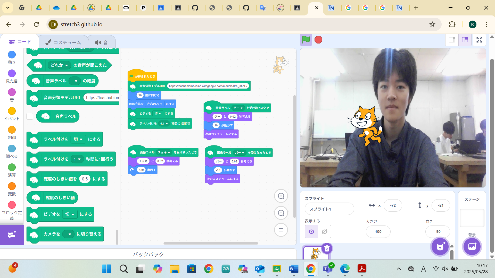
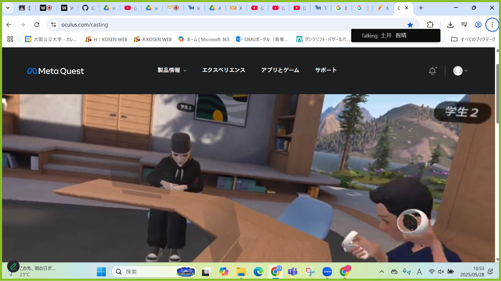
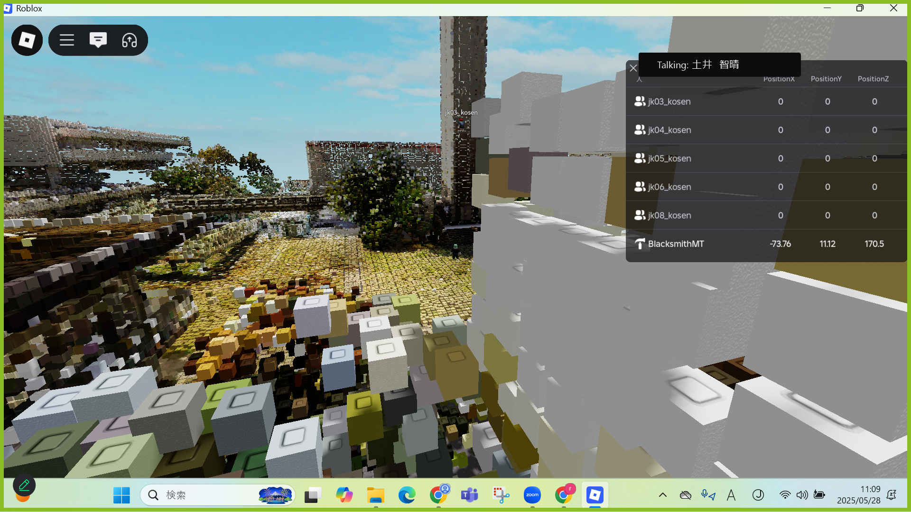

第2週目
2-1 2週目のレポートをHTMLで作る
1.内容
この授業ではgithubを用いたホームページの編集のしかたなどを1週目よりも詳しく学び、
学んだことを用いてレポートを作成した。
2.感想
はじめは見慣れていないプログラムのコードを見てついていけるか不安に思ったけれど、
紙の資料にも詳しく書いていたので少し授業から遅れてもやり方が分かって良かった。
3. 2週目が完成した人は1週目のレポートも完成させる
2-2 機械学習体験

1.内容
この授業ではTeachableMachineでの機械学習のしかた、学習したモデルをほかのアプリで使う方法などを学び、
学んだことを用いてスクラッチで、出した手に応じて動くプログラムを作った。
2.感想
機械学習という言葉を聞いたことがあってもそれが何かをよくわかっていなかったので、
今回の体験でどのようなもののことを指すのかを知れたのが嬉しかった。
2-3 VR（バーチャルリアリティー：Virtual Reality）の体験
 
1.内容
バーチャル空間内でのアバターの動かし方や、視点の動かし方などを学び、
ロブロックスでバーチャルの高専を見たり、workroomsを体験したりした。
2.感想
VRを体験するのは初めてだったのでとても新鮮に感じたし,
友達とVR空間内で遊んだりするのはとても楽しかったです。